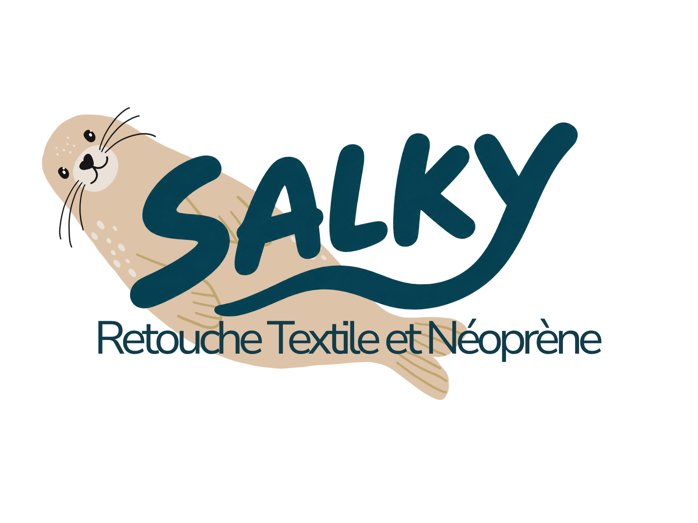

Retour à l'eau
Combinaisons de surf et équipements en néoprène : coutures, déchirures et petits bobos du quotidien.
Demander une réparation ↗L'ATELIER QUI PROLONGE L'AVENTURE ✳
Accroc, couture fatiguée, combinaison abîmée ? Chez Salky, on prend soin de tes vêtements et de ton néoprène pour qu'ils repartent à l'aventure.
Parlons de ta réparation ↗Retouche textile & néoprène · Dépôt ou envoi postal

CE QU'ON RÉPARE
Des réparations soignées pour prolonger la vie de ce que tu aimes porter.
Combinaisons de surf et équipements en néoprène : coutures, déchirures et petits bobos du quotidien.
Demander une réparation ↗Retouches et réparations de vêtements : une couture qui lâche, un trou à réparer, une pièce à sauver.
Parler de mon vêtement ↗L'ESPRIT SALKY
Parce qu'une pièce abîmée ne mérite pas forcément de finir au placard. Salky mise sur la réparation, le soin et la simplicité.
C'EST SIMPLE
Décris ton équipement et le problème rencontré. Tu pourras joindre des photos après notre premier échange.
On échange sur la réparation et on convient d'un dépôt en main propre ou d'un envoi postal.
Une fois la réparation terminée, ton équipement est prêt pour de nouvelles aventures.
ON EN PARLE ?
Décris-moi ce que tu souhaites réparer. Je te répondrai personnellement pour voir ce qu'on peut faire ensemble.
Le formulaire de réparation avec photos arrive bientôt. En attendant, prépare ton message avec ce modèle :
Aucun message n'est envoyé automatiquement. Le texte sera copié pour que tu puisses l'envoyer via ton canal de contact une fois celui-ci ajouté.